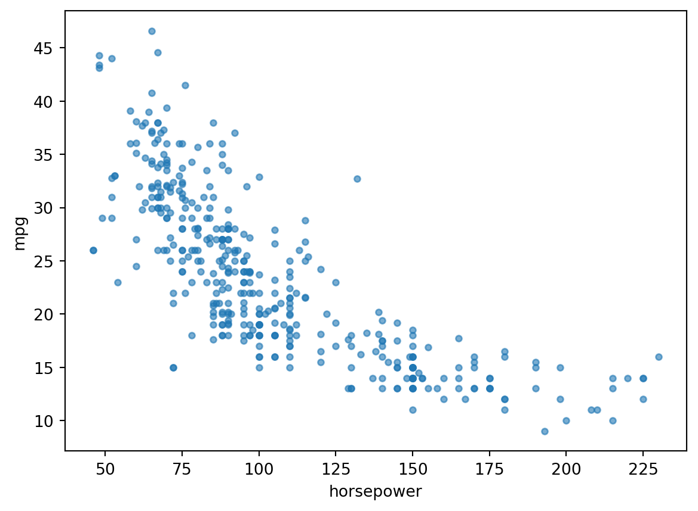
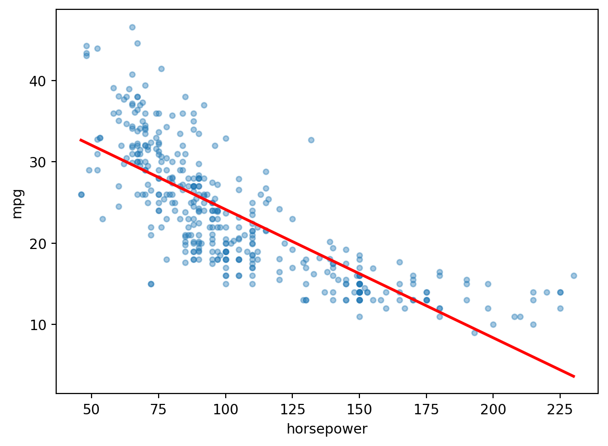
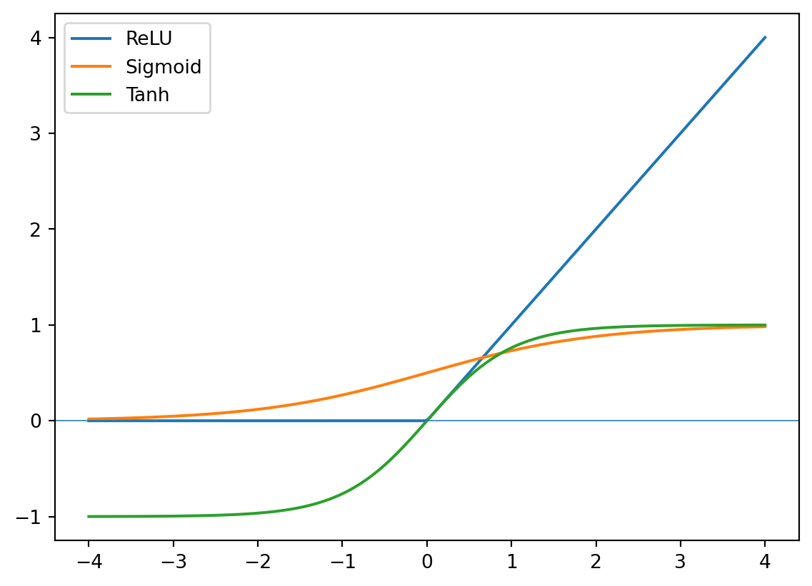
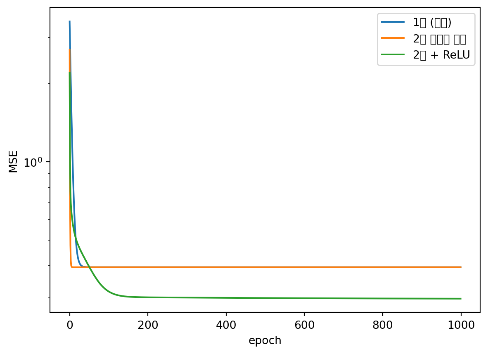
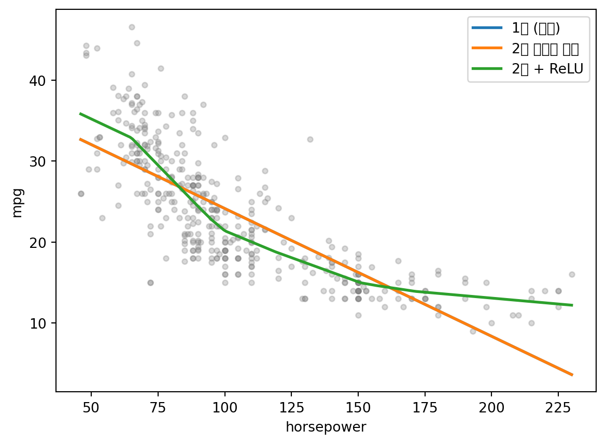
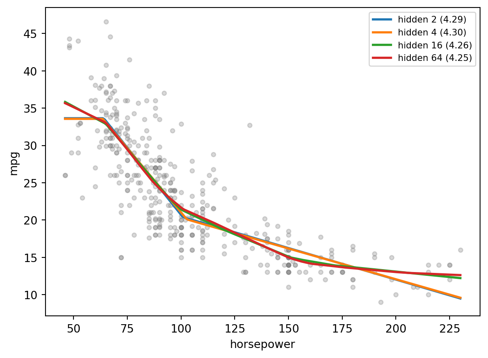

import numpy as np
import pandas as pd
import torch
import torch.nn as nn
import matplotlib.pyplot as plt
from torch.utils.data import TensorDataset, DataLoader
torch.manual_seed(42)<torch._C.Generator at 0x7f77c8b88890>
import numpy as np
import pandas as pd
import torch
import torch.nn as nn
import matplotlib.pyplot as plt
from torch.utils.data import TensorDataset, DataLoader
torch.manual_seed(42)<torch._C.Generator at 0x7f77c8b88890>URL = 'https://raw.githubusercontent.com/ralbu85/Lecture_DeepLearning_2022/main/auto.csv'
a = pd.read_csv(URL)
a.head()| cylinders | displacement | horsepower | weight | acceleration | model_year | origin | mpg | |
|---|---|---|---|---|---|---|---|---|
| 0 | 8 | 307.0 | 130.0 | 3504.0 | 12.0 | 70 | 1 | 18.0 |
| 1 | 8 | 350.0 | 165.0 | 3693.0 | 11.5 | 70 | 1 | 15.0 |
| 2 | 8 | 318.0 | 150.0 | 3436.0 | 11.0 | 70 | 1 | 18.0 |
| 3 | 8 | 304.0 | 150.0 | 3433.0 | 12.0 | 70 | 1 | 16.0 |
| 4 | 8 | 302.0 | 140.0 | 3449.0 | 10.5 | 70 | 1 | 17.0 |
a.shape # 자동차 392대(392, 8)plt.scatter(a['horsepower'], a['mpg'], s=14, alpha=0.6)
plt.xlabel('horsepower'); plt.ylabel('mpg'); plt.show()
휘어 있다. 마력이 낮을 때는 급하게 떨어지고, 150 이상에서는 거의 평평하다. 직선을 그어 보면 양쪽 끝에서 빗나간다.
from sklearn.linear_model import LinearRegression
Xn = a[['horsepower']].to_numpy(dtype='float32')
yn = a['mpg'].to_numpy(dtype='float32')
grid = np.linspace(Xn.min(), Xn.max(), 200).reshape(-1, 1).astype('float32')
line = LinearRegression().fit(Xn, yn)
plt.scatter(Xn, yn, s=14, alpha=0.4)
plt.plot(grid, line.predict(grid), 'r-', lw=2)
plt.xlabel('horsepower'); plt.ylabel('mpg'); plt.show()
nn.Linear1주차에 X @ w + b 로 예측했다. 이것이 퍼셉트론 하나다. PyTorch에는 그것을 담은 부품이 이미 있다.
layer = nn.Linear(3, 1) # 입력 3개 → 출력 1개
layerLinear(in_features=3, out_features=1, bias=True)layer.weight # 가중치 — 모양이 (출력, 입력) 이다Parameter containing:
tensor([[ 0.4414, 0.4792, -0.1353]], requires_grad=True)layer.bias # 편향Parameter containing:
tensor([0.5304], requires_grad=True)sum(p.numel() for p in layer.parameters()) # 3 x 1 + 14(출력, 입력)
1주차에는 w 를 (p,) 로 두고 X @ w 를 했다. nn.Linear 는 (출력, 입력) 으로 두고 \(xW^\top + b\) 를 계산한다. 결과는 같다.
x = torch.tensor([1., 2., 3.])
w = torch.tensor([0.5, -1.0, 2.0])
b = 0.1
(w * x).sum() + b # 0.5x1 + (-1)x2 + 2x3 + 0.1tensor(4.6000)with torch.no_grad(): # 우리 숫자를 그대로 넣는다
layer.weight.copy_(w.unsqueeze(0))
layer.bias.copy_(torch.tensor([b]))
layer(x) # 같은 값이 나온다tensor([4.6000], grad_fn=<ViewBackward0>)X5 = torch.randn(5, 3)
layer(X5).shape # 대당 하나씩torch.Size([5, 1])입력 4개, 출력 1개인 퍼셉트론을 만들고 자동차 10대짜리 입력을 통과시키시오.
p = None # ← nn.Linear(...)
out10 = None # ← p(torch.randn(10, 4))
assert out10 is not None and tuple(out10.shape) == (10, 1)
print('통과')p = nn.Linear(4, 1)
out10 = p(torch.randn(10, 4))
out10.shape, sum(q.numel() for q in p.parameters()) # (10,1), 4x1+1(torch.Size([10, 1]), 5)퍼셉트론 하나는 숫자 하나를 낸다. 여러 개를 나란히 놓은 것이 층이다.
hidden = nn.Linear(1, 8) # 입력 1개 → 노드 8개
hidden.weight.shape # (출력 8, 입력 1)torch.Size([8, 1])sum(q.numel() for q in hidden.parameters()) # 1 x 8 + 816hidden(torch.tensor([[100.0]])).shape # 마력 100인 차 한 대 → 8개 값torch.Size([1, 8])노드 8개가 같은 입력을 서로 다른 가중치로 본다.
nn.Linear(5, 12) 의 파라미터 수는? 먼저 계산한 뒤 확인하시오.
my_answer = None # ← 예상한 숫자
real = sum(q.numel() for q in nn.Linear(5, 12).parameters())
assert my_answer == real, f'다릅니다. 실제는 {real}'
print('통과')5 * 12 + 12, sum(q.numel() for q in nn.Linear(5, 12).parameters()) # (입력x출력) + 출력(72, 72)z = torch.tensor([-2.0, -0.5, 0.0, 1.5, 3.0])
ztensor([-2.0000, -0.5000, 0.0000, 1.5000, 3.0000])nn.ReLU()(z) # 음수를 0으로tensor([0.0000, 0.0000, 0.0000, 1.5000, 3.0000])nn.Sigmoid()(z) # 0~1로 눌러 담는다tensor([0.1192, 0.3775, 0.5000, 0.8176, 0.9526])nn.Tanh()(z) # -1~1로tensor([-0.9640, -0.4621, 0.0000, 0.9051, 0.9951])sum(q.numel() for q in nn.ReLU().parameters()) # 배우는 것이 없다0t = torch.linspace(-4, 4, 200)
for f, name in [(nn.ReLU(), 'ReLU'), (nn.Sigmoid(), 'Sigmoid'), (nn.Tanh(), 'Tanh')]:
plt.plot(t, f(t), label=name)
plt.axhline(0, lw=0.6); plt.legend(); plt.show()
torch.manual_seed(0)
L1 = nn.Linear(3, 8, bias=False)
L2 = nn.Linear(8, 2, bias=False)
Xc = torch.randn(4, 3)
L2(L1(Xc)) # 두 층을 통과시킨 결과tensor([[ 0.6120, 0.4294],
[ 0.4672, 0.6258],
[-0.5192, -0.2173],
[-0.2906, -0.6372]], grad_fn=<MmBackward0>)W = L2.weight @ L1.weight # 가중치 두 개를 미리 곱해 두면
W.shape # (2,8) @ (8,3) → (2,3), 결국 한 층torch.Size([2, 3])Xc @ W.T # 층 하나로 계산해도 같은 값이다tensor([[ 0.6120, 0.4294],
[ 0.4672, 0.6258],
[-0.5192, -0.2173],
[-0.2906, -0.6372]], grad_fn=<MmBackward0>)torch.allclose(L2(L1(Xc)), Xc @ W.T, atol=1e-5)True\[W_2(W_1 x) = (W_2 W_1) x\]
행렬 두 개를 곱하면 행렬 하나다. 활성화 없이 층을 100개 쌓아도 결국 직선 하나다. 중간에 ReLU처럼 직선이 아닌 함수를 끼워야 층이 층 노릇을 한다.
torch.allclose(L2(nn.ReLU()(L1(Xc))), Xc @ W.T, atol=1e-5) # ReLU를 넣으면 더 이상 같지 않다Falsenn.Sequentialmlp = nn.Sequential(
nn.Linear(1, 16), # 마력 1개 → 은닉 16개
nn.ReLU(),
nn.Linear(16, 1), # 은닉 16개 → 연비 1개
)
mlpSequential(
(0): Linear(in_features=1, out_features=16, bias=True)
(1): ReLU()
(2): Linear(in_features=16, out_features=1, bias=True)
)h = torch.zeros(5, 1)
for lay in mlp: # 층을 하나씩 통과시키며 모양을 본다
h = lay(h)
print(f'{lay.__class__.__name__:8s} → {tuple(h.shape)}')Linear → (5, 16)
ReLU → (5, 16)
Linear → (5, 1)sum(q.numel() for q in mlp.parameters()) # (1x16+16) + (16x1+1)491주차의 텐서에 DataLoader 를 붙인다. Dataset 이 “무엇이 있는가”라면 DataLoader 는 “어떻게 꺼내는가” 다.
X = torch.tensor(Xn)
y = torch.tensor(yn).unsqueeze(1)
mu, sd = X.mean(dim=0), X.std(dim=0, unbiased=False) # 숫자 크기를 맞춘다 (4주차에 배운다)
ym, ys = y.mean(), y.std(unbiased=False)
Xs = (X - mu) / sd
ys_ = (y - ym) / ys
ds = TensorDataset(Xs, ys_)
len(ds)392ds[0] # 0번 자동차의 (입력, 정답)(tensor([0.6641]), tensor([-0.6986]))loader = DataLoader(ds, batch_size=len(ds)) # 오늘은 전부 한 번에 꺼낸다
len(loader) # 에폭당 배치 수1xb, yb = next(iter(loader))
xb.shape, yb.shape(torch.Size([392, 1]), torch.Size([392, 1]))몇 건씩 꺼낼지가 학습에 어떤 영향을 주는지는 4주차에서 다룬다. 로더를 쓰는 이 형태는 15주 내내 바뀌지 않는다.
def train(model, epochs=1000, lr=0.05):
optimizer = torch.optim.SGD(model.parameters(), lr=lr)
criterion = nn.MSELoss()
history = []
for epoch in range(epochs):
for xb, yb in loader:
optimizer.zero_grad() # ①
loss = criterion(model(xb), yb) # ②
loss.backward() # ③
optimizer.step() # ④
history.append(loss.item())
return history①~④가 무슨 뜻인지는 3주차에 한 줄씩 배운다. 숨겨 놓은 함수가 아니라 앞으로 계속 직접 쓸 네 줄이므로 눈에 익혀 두면 된다. 오늘은 “층을 쌓으면 무엇이 달라지는가”만 본다.
def rmse_of(model):
with torch.no_grad():
pred = model(Xs).squeeze(1) * ys + ym # 원래 단위(mpg)로 되돌린다
return float(((pred - y.squeeze(1)) ** 2).mean().sqrt())
models = {
'1층 (선형)': lambda: nn.Linear(1, 1),
'2층 활성화 없음': lambda: nn.Sequential(nn.Linear(1, 16), nn.Linear(16, 1)),
'2층 + ReLU': lambda: nn.Sequential(nn.Linear(1, 16), nn.ReLU(), nn.Linear(16, 1)),
}
trained, hists = {}, {}
for name, make in models.items():
torch.manual_seed(42)
m = make()
hists[name] = train(m)
trained[name] = mpd.DataFrame([{'모형': n,
'파라미터': sum(q.numel() for q in m.parameters()),
'RMSE (mpg)': round(rmse_of(m), 3)}
for n, m in trained.items()])| 모형 | 파라미터 | RMSE (mpg) | |
|---|---|---|---|
| 0 | 1층 (선형) | 2 | 4.893 |
| 1 | 2층 활성화 없음 | 49 | 4.893 |
| 2 | 2층 + ReLU | 49 | 4.258 |
파라미터는 2개와 49개로 24배 차이인데 성능은 소수점까지 같다. 4-1절에서 확인한 그대로 — 활성화 없는 2층은 선형 모형 그 자체다.
for name in models:
plt.plot(hists[name], label=name)
plt.yscale('log'); plt.xlabel('epoch'); plt.ylabel('MSE'); plt.legend(); plt.show()
gt = torch.tensor((grid - mu.numpy()) / sd.numpy())
plt.scatter(Xn, yn, s=14, alpha=0.3, color='gray')
for name, m in trained.items():
with torch.no_grad():
plt.plot(grid, m(gt).squeeze(1).numpy() * float(ys) + float(ym), lw=2, label=name)
plt.xlabel('horsepower'); plt.ylabel('mpg'); plt.legend(); plt.show()
앞의 두 모형은 직선 하나로 겹쳐 있고, ReLU를 넣은 모형만 꺾인 선으로 데이터를 따라간다. ReLU는 꺾인 직선이다. 16개를 겹치면 꺾은선으로 곡선을 흉내낼 수 있다.
은닉 노드를 2, 4, 16, 64 로 바꿔 학습시키고 예측 곡선을 한 그림에 겹쳐 보시오. 노드가 적으면 곡선이 어떻게 되는가?
plt.scatter(Xn, yn, s=14, alpha=0.3, color='gray')
for hsize in [2, 4, 16, 64]:
torch.manual_seed(42)
m = ... # ← 은닉 hsize개짜리 nn.Sequential
train(m)
with torch.no_grad():
plt.plot(grid, m(gt).squeeze(1).numpy() * float(ys) + float(ym), label=f'hidden {hsize}')
plt.legend(); plt.show()plt.scatter(Xn, yn, s=14, alpha=0.3, color='gray')
for hsize in [2, 4, 16, 64]:
torch.manual_seed(42)
m = nn.Sequential(nn.Linear(1, hsize), nn.ReLU(), nn.Linear(hsize, 1))
train(m)
with torch.no_grad():
plt.plot(grid, m(gt).squeeze(1).numpy() * float(ys) + float(ym), lw=2,
label=f'hidden {hsize} ({rmse_of(m):.2f})')
plt.xlabel('horsepower'); plt.ylabel('mpg'); plt.legend(fontsize=8); plt.show()
노드가 2개면 꺾이는 곳이 하나뿐이라 곡선을 따라가지 못한다. 은닉 노드 수는 모형이 표현할 수 있는 모양의 복잡도를 정한다 — 하이퍼파라미터다.
\[W_2(W_1x) = (W_2W_1)x \quad\Longrightarrow\quad \text{활성화가 없으면 층을 쌓아도 직선}\]
먼저 답을 예상한 뒤 한 셀씩 실행해서 맞춰 본다.
net = nn.Sequential(
nn.Linear(4, 10), nn.ReLU(),
nn.Linear(10, 6), nn.ReLU(),
nn.Linear(6, 3),
)
xq = torch.randn(7, 4)net(xq).shapetorch.Size([7, 3])sum(q.numel() for q in net.parameters()) # (4x10+10) + (10x6+6) + (6x3+3)137net[0].weight.shapetorch.Size([10, 4])len(DataLoader(TensorDataset(xq, torch.randn(7, 3)), batch_size=3)) # 7건을 3씩3실습 3주차: 학습 루프를 직접 만든다 — 오늘 그대로 옮겨 적은 네 줄의 뜻을 한 줄씩 배운다.